Paso 1
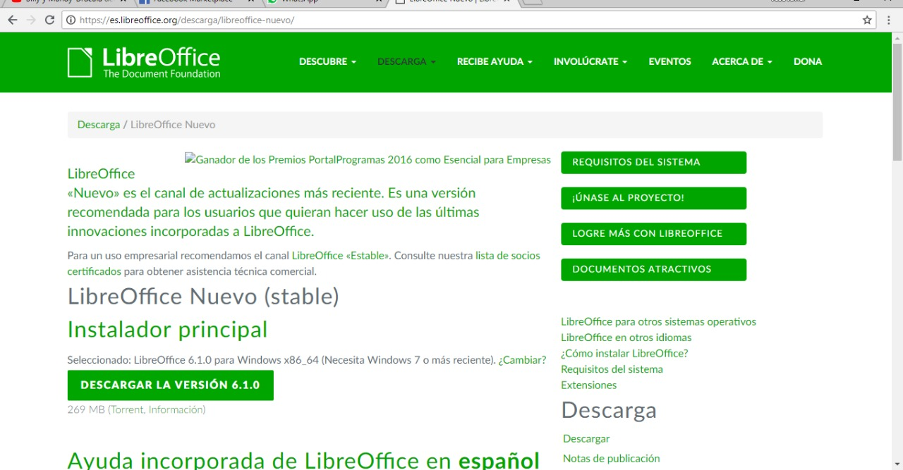
Vamos a la pagina de libreoffice y descargamos la
version compatible con nuestro dispositivo.
Paso 2
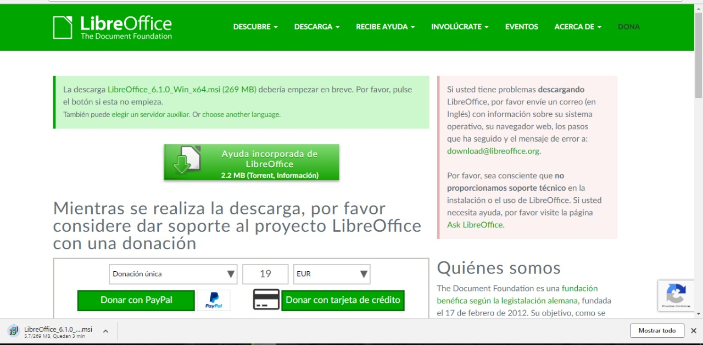
Esperanos a que se descargue el archivo y lo abrimos
Paso 3
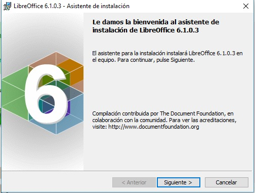
Inicia el Asistente de instalacion, damos click en siguiente
Paso 4
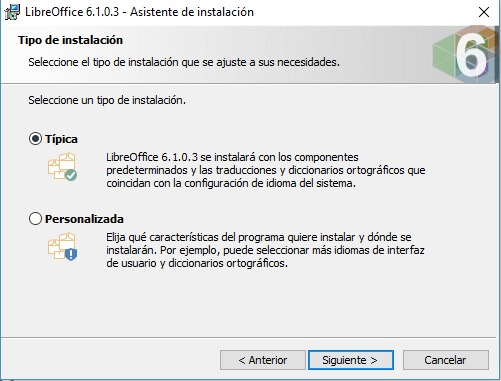
Seleccionamos instalacion tipica
Paso 5
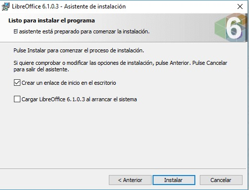
Seleccionamos crear un icono en el escritorio y pulsamos ./img/instalar
Paso 6
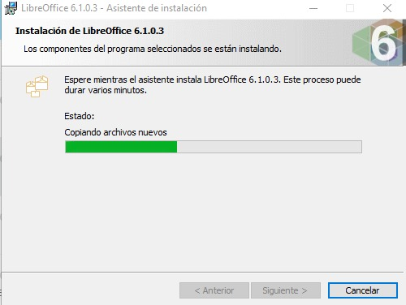
Esperar a que la instalacion termine
Paso 7
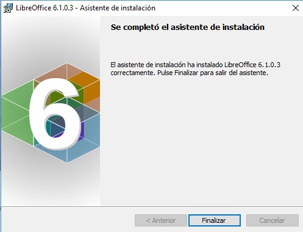
Se termino la instalacion, damos Finalizar
Paso 8
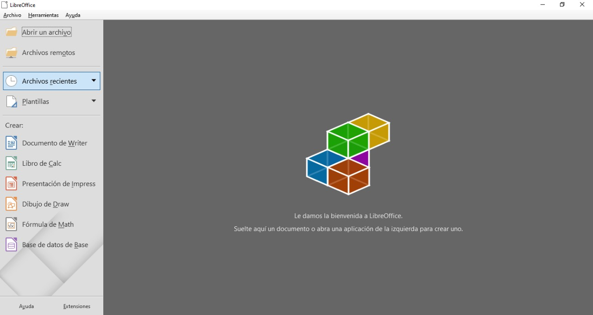
Ya podemos utilizar LibreOffice en Windows10
instalar en Linux (Ubuntu)
Paso 1
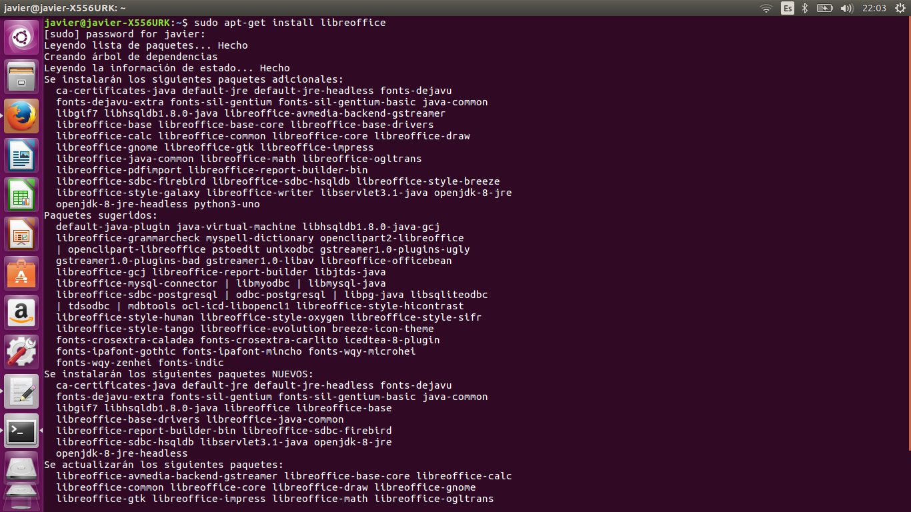
Abrimos la consola de Ubuntu y ejecutamos el siguiente comando
sudo
apt-get install libreoffice
Paso 2
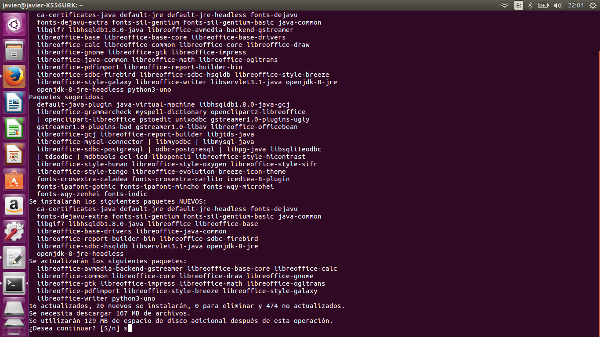
Confirmamos la instalacion de LibreOffice con la tecla "S"
Paso 3
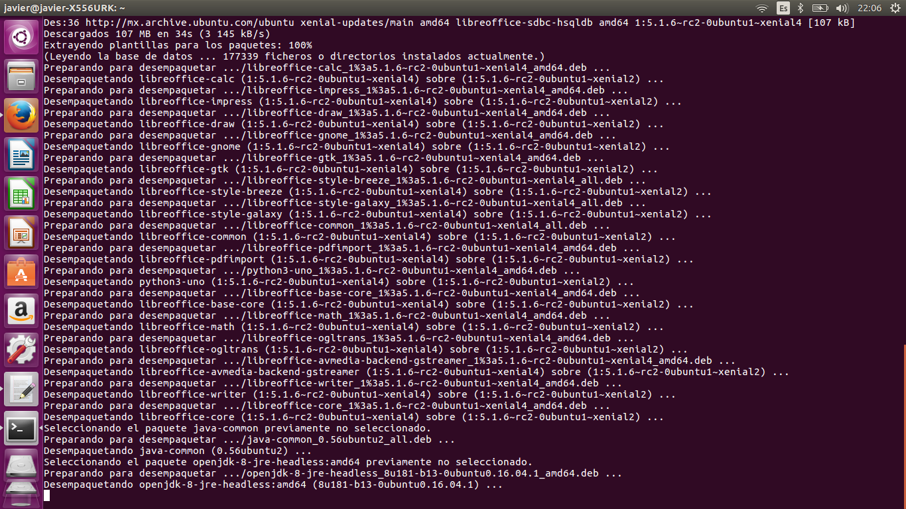
Esperamos a que los paquetes se instalen
Paso 4
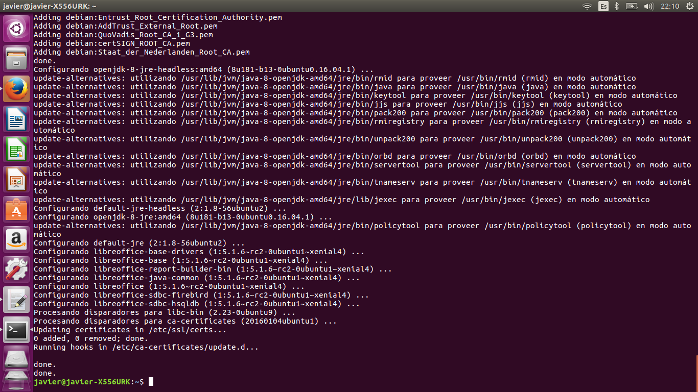
La instalacion se completo
Paso 5
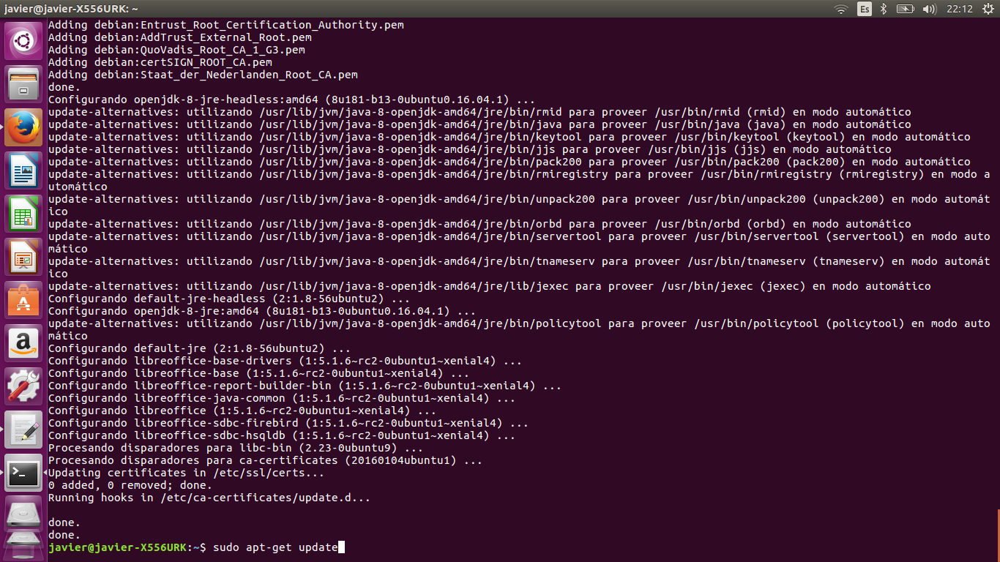
Algunas distribuciones de Linux ya cuentan con el LibreOffice instalado, de ser asi ejecutaremos el siguiente
comando para que se actualice
sudo apt-get update
Paso 6
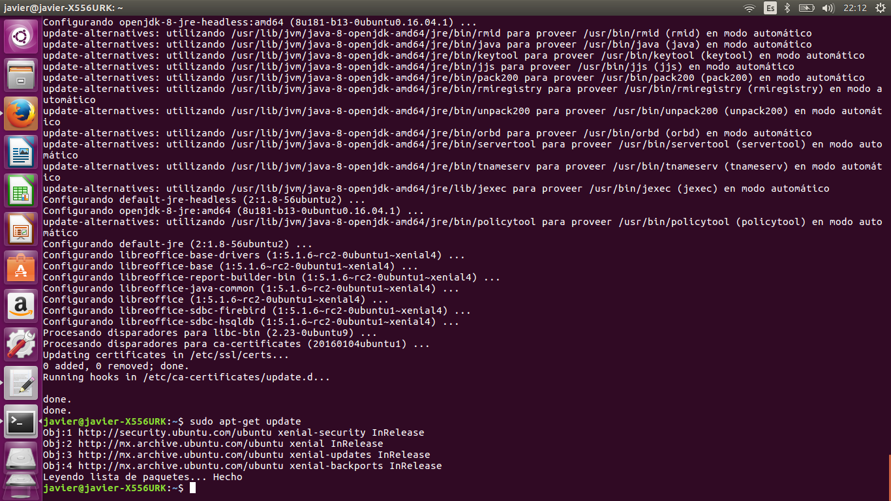
Se termino de ejecutar el comando update
Paso 7
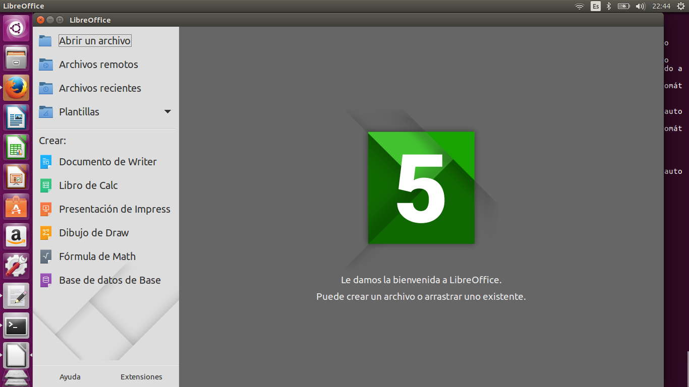
Ahora podemos utilizar libreoffice en Linux Ubuntu